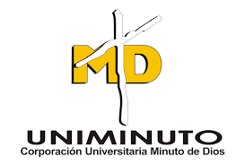

COSTOS

PRODUCCION

PROYECTOS

INNOVACION
PERFIL >>>
Profesional en ingeniería industrial con estudios superiores en proyectos y experiencia en levantamiento de procesos investigación y adaptación de metodologías de innovación y desarrollo de los productos, con habilidad para la redacción de documentos, competencia en gerencia de procesos tales como: estructuración de indicadores, conocimiento en gestión de la calidad, elaboración de informes, seguimiento y ejecución a procesos, elaboración de diagramas de flujo, seguimiento a costos e indicadores de gestión, planeación de la producción. Persona con habilidad liderazgo, comunicación asertiva, analítico, estratégico y comprometido con las funciones, metas y políticas organizacionales.HTML

GERENCIA DE PROYECTOS
INGENIERIA INDUSTRIAL